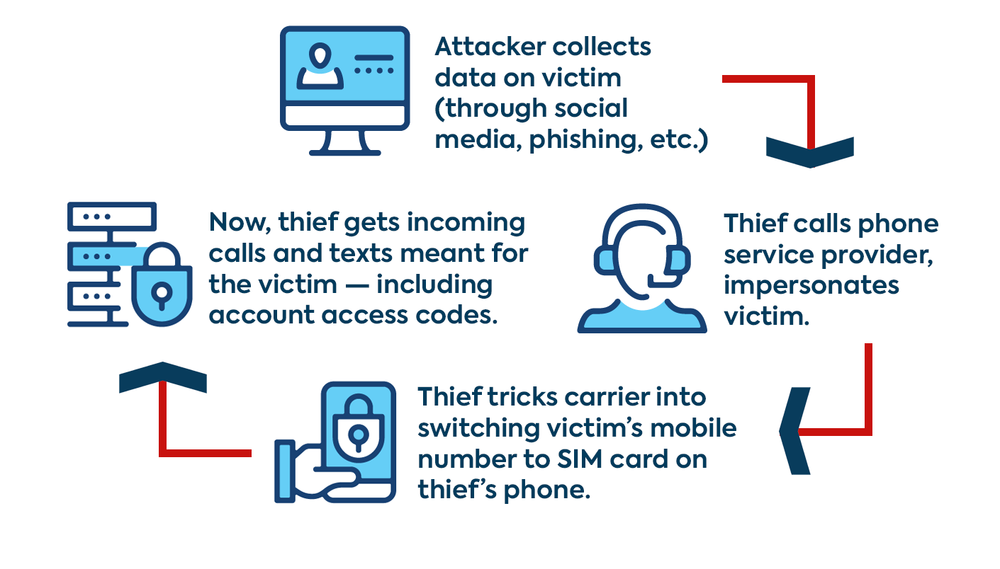

Sustainable digital identity
Essential steps leading to your secure and healthy online presence.
Strong password is the alpha and omega
The most effective way how today to hack someone's identity is to "social engineer". That means "guess" someone's password based on the target's public informations (date of birth, postal code, house number etc.) usually on social sites.
By using complex not the organic password for all of your online accounts, you can drastically reduce the risk of having your birthday on Facebook or tag the location of your hometown in an Instagram post.
Another step forward to secure your online and offline identity, is using a unique password for each account you own. That creates a powerful cascade of barriers that possible attackers might cross pretty easily with a single or similar passwords.
To be able to manipulate with a number of absolutely random characters from the keyboard you need a reliable password manager. Does not matter how powerful and unique your passwords are when you keep them in Excel spreadsheets on your work laptop. If you are an Apple user, you can stick with native Apple keychain or other trusted managers, such as LastPass.
It is recomended to remember at least one code - master password into your password manager or get a USB or bluetooth key.
Learn more about hardware security key solution.
Get yourself a powerful password
Every single code is a unique combination. E Corp does not track your generateed passwords.
Check your the power of your password.
Contemporary password hacking is more about social engeneering and picking the most commonly used words/phrases in dictionaries, than combinatorics. That is for supercomputers.
Paste a password from the random generator above and look how long it would take an average (not supercomputer) pc to crack your password. If you are going to measure any of your current codes, never write the exact same password you use for logging into your online accounts.
Why is 2FA essential
Two-factor authentication (2FA) is an additional security feature for logging into your online accounts. 2FA is based on entering a single-use time-dependent code sent you by SMS, email, or trusted third-party verification app.
The point is to create a barrier that only you can pass over - attackers would also have to compromise your email or SIM card (read more about SIM swapping below).
902 844
024 930
056 929
039 032
983 230
663 892
780 320
401 024
896 309
930 324
609 714
595 469
After successful 2FA activation, you might be asked to write down or download a couple of six to eight-digit recovery codes. In case you would lose access to your email and phone number, you still can manage your online account by those single-use codes (after you use all of them, you will receive new ones).
Alternative 2FA method is already mentioned hardware (Bluetooth or USB) key.
What is a SIM swapping

https://www.snbonline.com/
You can easily avoid this by using a mobile app for 2FA that is independent of your phone number. Most of the online services provide their own native app for 2FA or they support trusted third party apps for secure two-factor authentication, such as Authy.
Consider setting up two-factor authentication for your internet accounts to protect your identity and data despite the tiny inconvenience with logging in.
Avoiding beeing victim of the social engeneering
Watch out for your online traces.
Set your personal information (such as birthday, year of graduation, etc.) as private or at least not public (friends/followers) NO friends of friends (you do not control the information accessibility scope!).
Do not pick your pin codes or passwords as keywords you published somewhere (pet's or childs name).
When registering for a new online service, fill out only the required information. All your published informations might attackers use against you.
When instaling a new app, checkout in settings it's requests to read your data - decide which are necessary for the app functionality.
For example, does your app for online shoping really needs
Useful links
Backstage of social engeneering